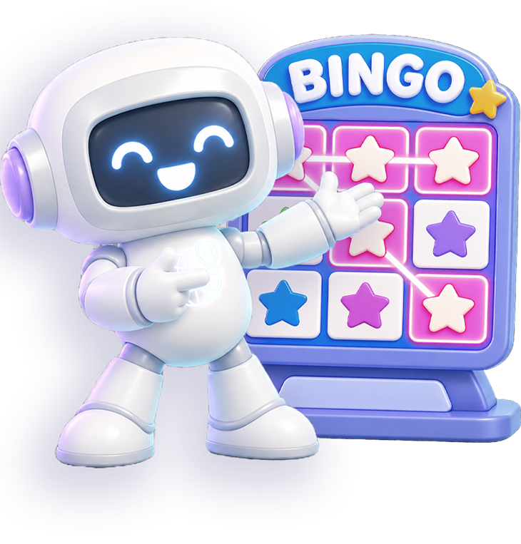

확정된 차시(사회 전체 · 과학 1·3차시)의 영상 · 도입(게임 방법) · 마무리 화면을 같은 스타일끼리 묶어 스타일마다 대표 2곳을 보여 주는 페이지. 견본은 각 페이지 소스(화면 영역)를 그대로 가져온 것이라 요소 검사로 바로 확인할 수 있음. 대부분 공용 css/common.css만 쓰는 페이지(전용 CSS 없음)이고, "개별 구성" 탭의 sa/07:14만 그 페이지의 전용 CSS를 견본 안에 함께 붙임. 페이지를 고친 뒤에는 가이드 견본을 다시 가져와야 함.
| 탭 묶음 | 탭 |
|---|---|
| 영상 | 영상 상자 + 다음 버튼(배경만 다름) |
| 도입 (리본 없음) | 안내 문구 + 번호 목록 / 제목만(세로 가운데) |
| 게임 방법 (리본) | 번호 목록만 / 안내 문구 + 박스 / 넓은 패널(캐릭터 오른쪽) |
| 마무리 | 핵심 문구 + 설명 문구 / 개별 구성 |
영상 상자(.video-box 안 <video class="video-el"> + 재생 버튼 .video-play-btn)와 다음 버튼(.next-btn-center). 위치·크기·테두리는 전부 공용이라 페이지에는 배경(main)만 둠. 가이드 견본에는 영상 파일을 불러오지 않고 틀만 보임.
리본 없이 .intro-lead(없으면 목록만) + .intro-list만 있는 도입 화면. 안내 문장을 제목처럼 위에 크게 두는 화면 포함.

지금 친구는 어떤 기분일까요?

Gemini Live 모드를 활용하여
현장체험학습에 필요한 준비물을 골라요!
안내 문구(.intro-lead)만 있고 목록·설명이 없는 도입 화면. 흰 상자(.intro-panel)에 .is-center를 더하면 문구가 위로 치우치지 않고 버튼 자리(아래 170px)를 뺀 영역의 세로 가운데에 놓임.
이미지를 만들기 위해서 AI에게
설명하는 글을 ‘프롬프트’ 라고 해요.
내가 원하는 대로 그림을 생성하려면
어떤 내용을 알려줘야 할까요?
ChatGPT를 활용하여
나의 미래 모습을
만들어보아요.
.intro-tab("게임 방법") 아래 번호 목록만 있는 가장 단순한 도입 화면. 캐릭터 왼쪽 · 시작 버튼 가운데 아래.

게임 방법

게임 방법
위 리본 .intro-tab("게임 방법") + 안내 문구 .p-how-lead + 파란 테두리 박스 .p-how. 박스 아래 TIP(.p-how-tip)·보조 문구(.p-how-foot)가 붙는 화면 포함. 목록 항목 사이 간격을 없애려면 .intro-list.is-tight.
게임 방법
큰일이에요! 과일 주문이 잔뜩 들어왔어요. 주문에 맞게 과일을 준비해야 해요.
주문을 정확하게 완성해서 최고의 농장 직원에 도전해보세요!
게임 방법
친구가 보낸 메시지 속에 마음이 숨어 있어요!
넓은 패널(.intro-panel.is-wide) + 오른쪽 캐릭터(.intro-character.is-right) + 시작하기 카드 버튼(.next-btn-intro.is-box).
인터넷 신문과 뉴스 영상에 다양한 정보가 담겨 있어요. 그 중에서 기온, 습도, 강수 확률과 같은 날씨 데이터를 찾아 수집해볼까요?
AI가 날씨 데이터를 바르게 분석하려면 필요한 데이터만 정확하게 모아야 해요! 날짜를 확인해 알맞은 데이터 조각만 쏙쏙 골라 상자에 담아볼까요?
.end-title + .end-panel 안에 핵심 문구 .end-lead(60px 남색, 문구가 길면 .is-small 52px)를 두고, 설명이 있으면 .end-desc(44px 먹색)를 아래에 더함. 캐릭터는 .intro-character(왼쪽 아래), 버튼은 .end-btn-retry · .end-btn-next-lesson. 글자는 word-break:keep-all(단어 중간에서 안 끊김).
최고예요!
메일의 질문을 읽고
조건과 자료를 살펴보며
모든 의뢰를 해결했어요!
정확한 데이터 수집과 깔끔한 데이터 정리 덕분에 정확한 답을 찾을 수 있었어요.


미션 성공!
성준이가 동아리 활동 장소를 잘 찾아갔어요! 여러 방법들의 장단점을 확인하고 고민해서 나에게 딱 맞는 해결방법을 선택해봐요.
공용 .end-panel 구성에 별 줄(.end-stars.is-pill + .end-panel.is-stars)을 더한 화면, 그리고 노트·말풍선처럼 따로 짠 화면. 개별 스타일로 두는 곳.
미션 성공!
모든 프롬프트를
성공적으로 수정했어요!
우리 동네에서 만날 수 있는
이웃을 찾아보고,
이웃의 역할도 이해했어요!